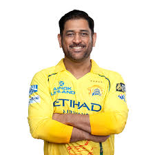
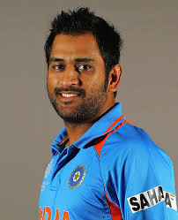
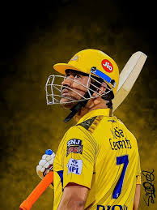
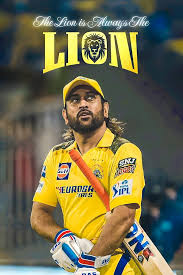
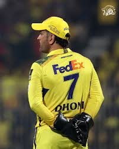
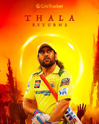

Mahendra Singh Dhoni is one of the greatest cricket captains in Indian history. Known for his calm personality and sharp decision-making, he led India to win the 2007 T20 World Cup, 2011 ODI World Cup, and 2013 Champions Trophy. He is also one of the best finishers in cricket.
Dhoni made his international debut in 2004 and quickly became known for his explosive batting style and exceptional wicket keeping skills. Over time he developed into one of the best finishers in limited - overs cricket. One of his most iconic moments came in the 2011 ICC cricket world cup final, where he scored the winning 6 that brought India the world cup after 28 years.






| Name | Runs | Achievement | Target |
|---|---|---|---|
| Player 1 | 1200 | Century Maker | 1500 |
| Player 2 | 980 | Half Century Specialist | 1200 |
| Player 3 | 1500 | Top Scorer | 2000 |
| Player 4 | 450 | New Talent | 800 |
| Player 5 | 2100 | Match Winner | 2500 |
| Player 6 | 1750 | Consistent Performer | 2000 |
| Player 7 | 3000 | Legend Player | 3500 |
| Player 8 | 640 | Finisher | 1000 |
| Player 9 | 890 | All-round Contributor | 1100 |
| Player 10 | 2600 | Captain Material | 3000 |